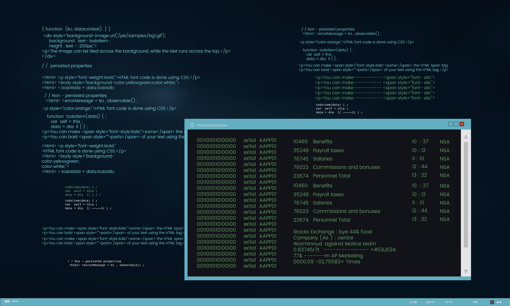

Is ls -la safe to use?
A tiny command with big visibility: ls -la is one of the first commands many people learn in a Unix-like shell. It lists files (including hidden ones) in long format and is typically harmless — but like any command, context matters. This page explains what ls -la does, why it’s usually safe, and the edge cases where you should be cautious.
What ls -la actually does
ls lists directory contents. The common options used here are:
- -l — long format: shows permissions, owner, group, size, timestamps, and filename.
- -a — all: includes hidden files (those beginning with .).
Together, ls -la prints a detailed listing of every item in the current directory, including dotfiles.


Why it’s generally safe
- Read-only operation: ls merely reads directory entries and prints information; it does not modify files or directories.
- Common, trusted utility: ls is part of core Unix utilities (coreutils on Linux) and is used daily by system administrators and developers.
- Low risk for the system: Running ls -la won’t change permissions, delete data, or execute files.
When to be cautious
Although ls -la itself is harmless, there are practical and security-related caveats to keep in mind:
- Maliciously replaced binaries or aliases: If an attacker has replaced /bin/ls with a trojan executable or you have an alias that wraps ls with other commands, running it could do unexpected things. Check with type ls or which ls.
- Running in sensitive directories: Listing extremely large directories (e.g., with millions of files) can produce huge output that stalls your terminal or consumes resources. It’s read-only but may stress the shell or terminal.
- Script parsing pitfalls: If a script parses ls output to make changes, the script—not ls—may be unsafe. Avoid using ls for programmatic parsing; use language-native directory functions (like os.listdir) or find with careful flags.
- Exposure of sensitive names: ls -la will reveal hidden files and permission bits. On a shared screen or public terminal, this could expose filenames you’d rather keep private (SSH keys, config files).
- Network-mounted filesystems: On slow or flaky network mounts, ls -la can hang or cause latency while fetching metadata.
Quick safety checks and best practices
- Confirm the command is the expected binary: type ls or which ls.
- Avoid running in unknown directories with huge content; try ls -1 | wc -l to count items first.
- Don’t rely on ls for scripting; use structured APIs or find/stat as appropriate.
- Be mindful of your environment: don’t run it on machines you don’t trust or where you lack permission.
- If privacy matters, avoid -a on shared/public terminals.
Short answer (for clarity)
ls -la is generally safe to run — it’s a read-only command that lists files in detail. However, check for suspicious aliases/binaries and be mindful of context (very large directories, sensitive environments, or untrusted systems).
Conclusion
ls -la is a fundamental, low-risk command for inspecting a directory. Use it freely on systems you control, but apply simple checks (is it the real ls? am I in a sensitive or huge directory?) to avoid surprising behavior. When in doubt, prefer safe alternatives or verify your environment first.